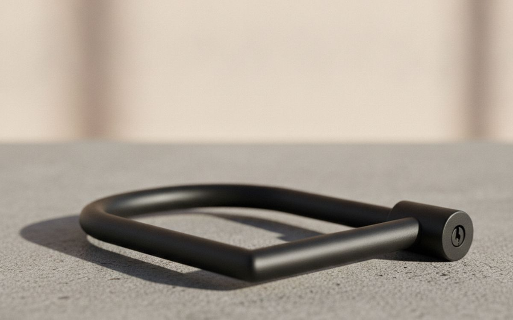
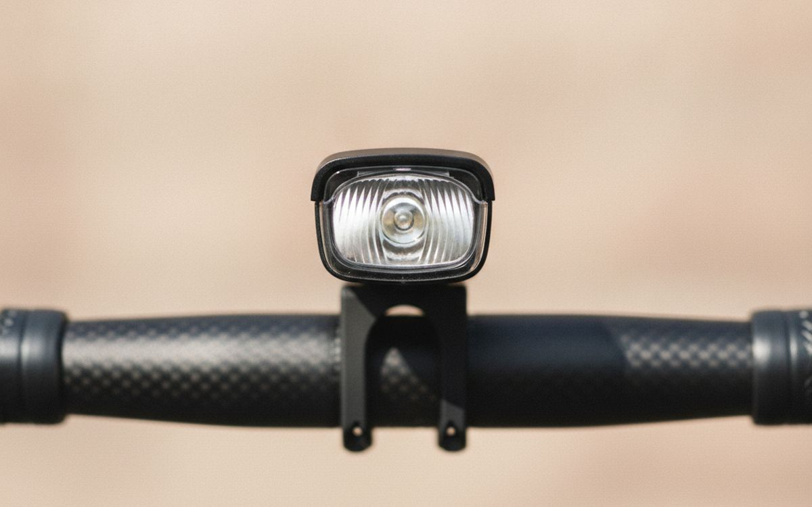
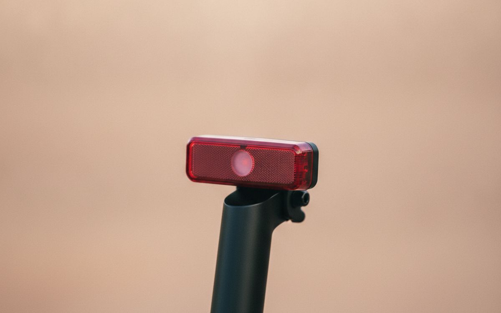
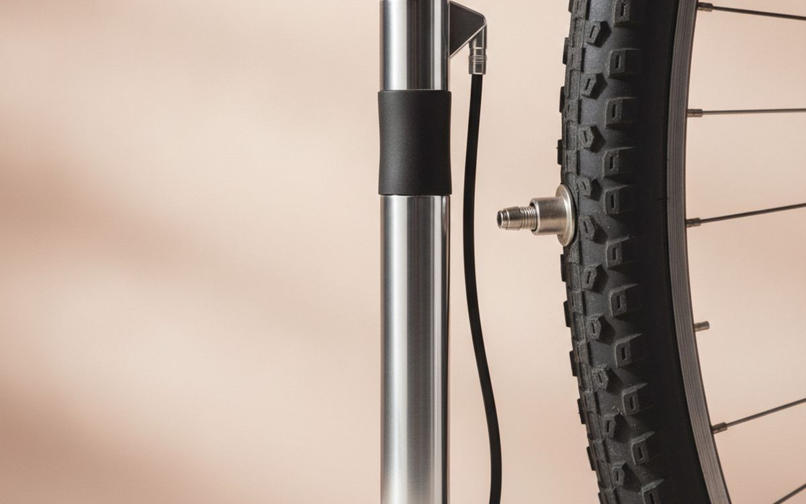
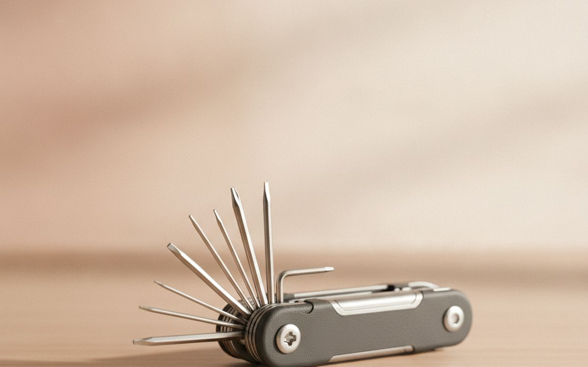
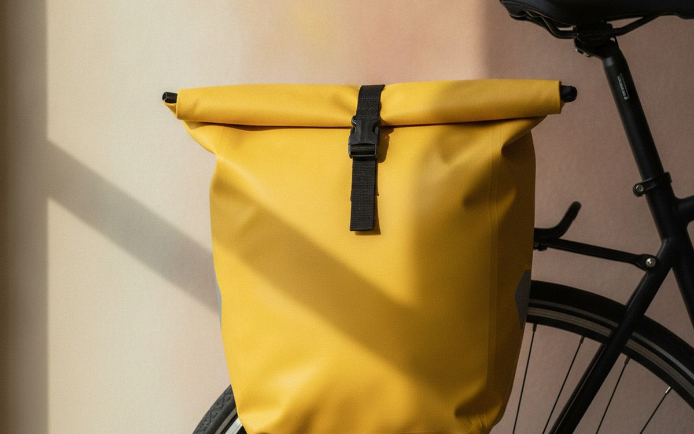
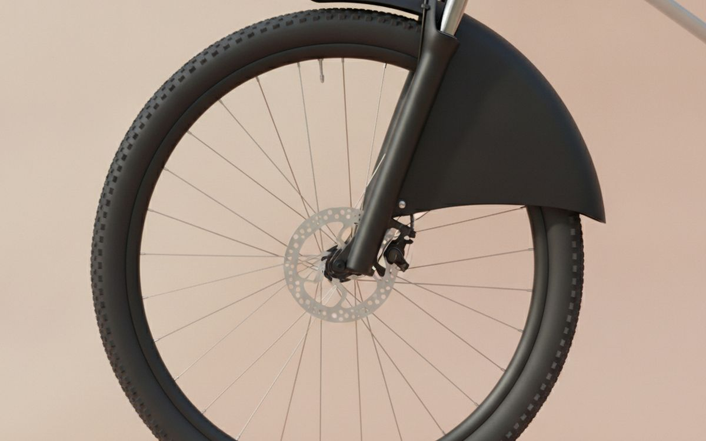
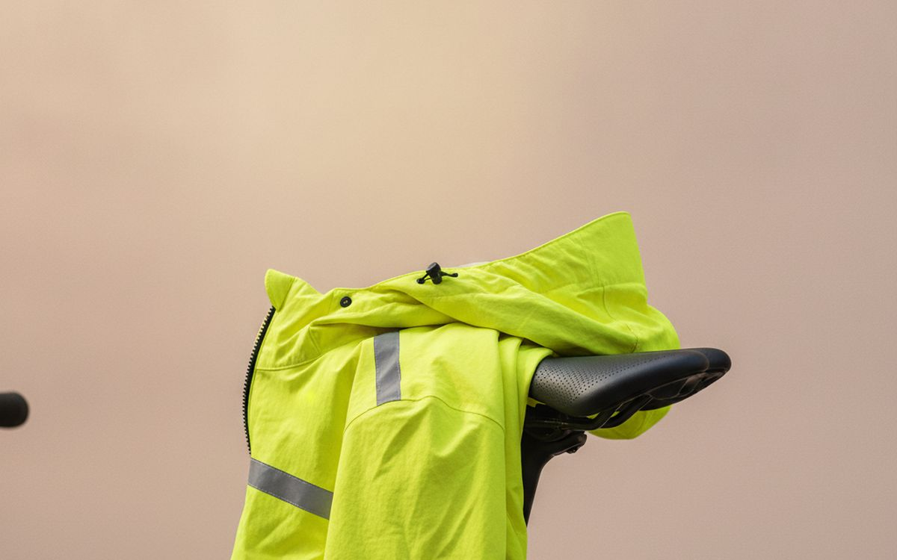
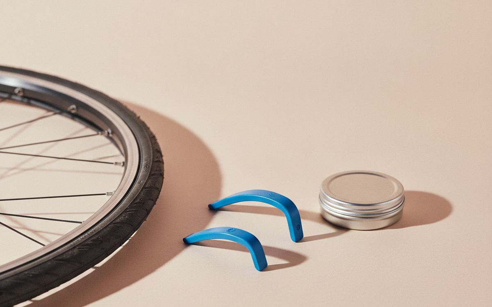
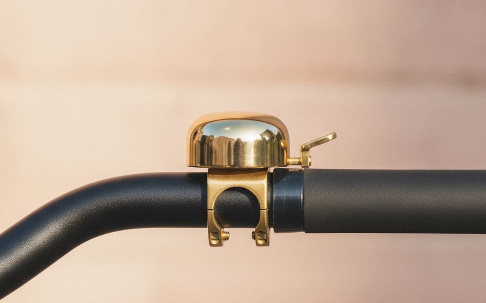

רכיבה על אופניים לעבודה או לסידורים נראית פשוטה. זה לא תמיד המצב. האופניים עצמם זה דבר אחד, אבל הציוד הדרוש כדי להפוך אותם לאמינים ופרקטיים זה דבר אחר. הרבה חדשים קונים יותר מדי, או את הדברים הלא נכונים. המדריך הזה מתמקד בפריטים החיוניים שהופכים רכיבה יומית לאפשרית, ואפילו מהנה, ללא הוצאות מיותרות או סיבוכים. העדפנו פריטים שמתמודדים ישירות עם בעיות נפוצות של נסיעות.
המלכודת היא נוחות. יצרנים רוצים למכור לכם מוצר לכל נישה שניתן להעלות על הדעת. אתם לא צריכים את רובם. הגדרה טובה של אופניים לנסיעות היא לרוב עניין של מינימליזם ועמידות. לכל פריט שנבחר כאן יש מטרה ברורה ועוזר להימנע מתסכולים נפוצים כמו פנצ'רים, גניבות, או הגעה ליעד רטובים. קנו את מה שאתם צריכים, השתמשו בו לעתים קרובות, והתעלמו מהשאר.
בקצרה
Kryptonite New-U KryptoLok Standard
אמצעי ההרתעה החיוני מפני גניבה
גילוי נאות. הקישורים בעמוד הזה הם קישורי שותפים. אם תקנו דרכם אנחנו עשויים להרוויח עמלה, בלי תוספת עלות לכם. זה לא משפיע על מה שנכנס לרשימה או על הסדר שלו.
איך בחרנו
התמקדנו במוצרים הידועים באמינותם ובתפקודם בנסיעות יומיות. זה לא עוסק בגאדג'טים האחרונים או בביצועי מירוץ. הבחירות שלנו מבוססות על מידע זמין לציבור, דיווחי משתמשים ארוכי טווח והבנה של נקודות כשל נפוצות בציוד אופניים. לא ערכנו בדיקות מעשיות. מטרתנו היא להדריך אתכם לקראת פריטים עמידים ופרקטיים הפותרים בעיות אמיתיות, ולא רק להוסיף לערמת הציוד שלכם.
השוואה מהירה
המחירים הם הערכה נכון לזמן הכתיבה ומשתנים לעיתים קרובות.
הבחירות

01 · אמצעי ההרתעה החיוני מפני גניבהKryptonite New-U KryptoLok Standard
מנעול U זה מציע איזון טוב של אבטחה ומשקל לנסיעות יומיות. הוא משתמש בשלשלת פלדה מוקשחת ובצילינדר מסוג דיסק, מה שהופך אותו עמיד בפני פריצות נפוצות וקידוח. בעוד שאף מנעול אינו בלתי חדיר, ה-KryptoLok Standard מספק הרתעה חזקה מפני גנבים מזדמנים ברוב הסביבות העירוניות. גודלו הקומפקטי מקל על נשיאתו על מתקן שלדת האופניים או בתיק. זהו כלי עבודה, לא כספת אבטחה גבוהה, אבל הוא מרתיע גניבות קלות ביעילות. זכרו לנעול גם את השלדה וגם גלגל אחד.
$40-70על מה מוותרים: עדיין פגיע למטחנות זווית
בעד
- חזק מאוד ביחס למחירו
- גודל סטנדרטי מתאים לרוב מתקני האופניים
- מתקן נשיאה לשלדה כלול
נגד
- עדיין פגיע למטחנות זווית
- מוסיף משקל מורגש לאופניים

02 · שיראו אתכם, ביום או בלילהBontrager Ion 200 RT
פנס קדמי קומפקטי זה מיועד בעיקר לנראות, לא להארת שבילים חשוכים. עם 200 לומנס, הוא הופך אתכם לבולטים לנהגים במהלך היום ומספק מספיק אור כדי שיראו אתכם בלילה באזורים עירוניים מוארים. דפוסי ההבהוב שלו מתוכננים לתפוס תשומת לב. האור נטען באמצעות USB, שזה נוח, אבל אומר שצריך לזכור עוד כבל. הוא מתחבר בקלות לכידון באמצעות רצועת סיליקון פשוטה. הסתמכות עליו להארת שבילים לא מוארים תהיה מאכזבת; תפקידו העיקרי הוא לוודא שאחרים רואים אתכם.
$40-60על מה מוותרים: טווח מוגבל לכבישים לא מוארים
בעד
- בהיר מאוד לגודלו
- נראות מצוינת ביום
- נטען USB
נגד
- טווח מוגבל לכבישים לא מוארים
- חיי סוללה יכולים להיות קצרים בהגדרות הבהירות ביותר

03 · הודיעו על נוכחותכם בבירורBontrager Flare RT
ה-Flare RT הוא פנס אחורי תואם ל-Ion 200 RT, המתמקד מאוד בנראות הרוכב. הוא פולט הבהוב עוצמתי שניתן להבחין בו ממרחק משמעותי, אפילו באור יום. זה עוזר לנהגים להעריך את מיקומכם ומהירותכם, ומפחית את הסיכון לתאונות אחוריות. כמו הפנס הקדמי, הוא נטען USB ומשתמש ברצועת חיבור פשוטה. הוא קטן, כך שהוא מתאים לרוב מושבי האופניים, אך קל לשכוח לטעון אותו בגלל גודלו. תפקידו העיקרי הוא בטיחות בתנועה, לא רק תאורה בסיסית.
$40-60על מה מוותרים: חיי סוללה עשויים להיות לא מספיקים לנסיעות ארוכות מאוד
בעד
- נראות יוצאת דופן ביום
- קומפקטי וקל משקל
- נטען USB
נגד
- חיי סוללה עשויים להיות לא מספיקים לנסיעות ארוכות מאוד
- קל לאבד אם לא מאובטח היטב

04 · תקנו פנצ'ר, בכל מקוםLezyne Sport Drive HV
משאבת מיני מיועדת להחזיר אתכם הביתה לאחר פנצ'ר, לא למילוי לחץ אוויר יומי. ה-Lezyne Sport Drive HV מצטיין בצמיגים בנפח גבוה יותר הנפוצים באופני עיר, ומביא אותם ללחץ רכיבה במהירות יחסית. הוא כולל צינור גמיש המגן על ונטיל הצמיג מפני נזק במהלך שאיבה נמרצת. למרות שהוא עובד, השגת לחץ אוויר אופטימלי בצמיג דורשת מאמץ וזמן משמעותיים בהשוואה למשאבת רצפה. זהו כלי חירום בצד הדרך, והוא ממלא את תפקידו מספיק טוב כדי להימנע מקריאה להסעה.
$20-30על מה מוותרים: שאיבה ללחץ גבוה מעייפת
בעד
- יעיל לצמיגים בנפח גבוה יותר
- צינור גמיש מונע נזק לונטיל
- מבנה עמיד
נגד
- שאיבה ללחץ גבוה מעייפת
- פחות יעיל ממדחס CO2

05 · כוונונים תוך כדי תנועהTopeak Hexus X
כלי רב-תכליתי טוב מטפל ברוב הבעיות המכניות הקלות שמתעוררות במהלך נסיעה. ה-Topeak Hexus X כולל סט מקיף של מפתחות אלן, מברג פיליפס ושטוח, ולעיתים קרובות כלי לשרשרת. כלים אלו מאפשרים כוונון כיסא, הידוק ברגים רופפים, או אפילו תיקוני שרשרת בסיסיים. הוא קומפקטי מספיק כדי להתאים לתיק כיסא או תרמיל. הכלים קצרים, מה שאומר פחות מנוף לברגים הדוקים במיוחד, וכלי השרשרת בסיסי, לא לשימוש יומיומי. כלי זה מיועד למקרי חירום, לא לתיקונים ברמת מוסך.
$25-40על מה מוותרים: מנופים קצרים מגבילים מומנט
בעד
- מגוון רחב של כלים
- כלי שרשרת משולב
- קומפקטי ונייד
נגד
- מנופים קצרים מגבילים מומנט
- כלי שרשרת בסיסי ומסורבל

06 · שאו את הדברים שלכם, בגשם או בשמשOrtlieb Back-Roller Classic
תיקי צד אלו הם הסטנדרט למטען אופניים עמיד למים. עשויים מבד פוליאסטר מצופה PVC עמיד עם סגירת גליל, הם שומרים על התכולה יבשה באופן אמין בגשם חזק. מערכת החיבור QL2.1 מאובטחת וקלה לחיבור או ניתוק ממנשא אחורי. זה הופך אותם לאידיאליים לנשיאת מצרכים, בגדי עבודה, או מחשב נייד. העיצוב הפשוט פירושו ארגון פנימי מוגבל, ולעיתים קרובות דורש שקיות קטנות נפרדות לפריטים קטנים. הם נמכרים כיחידים או כזוגות, והם השקעה, אבל הם מחזיקים מעמד.
$180-220על מה מוותרים: יקר, במיוחד לזוג
בעד
- עמיד לחלוטין למים
- חומר עמיד במיוחד
- קל להרכבה והסרה
נגד
- יקר, במיוחד לזוג
- ארגון פנימי מינימלי

07 · הישארו נקיים יותר במזג אוויר רטובSKS Bluemels Style Fenders
פגושים מלאים לרוב מתעלמים מהם אך משפרים משמעותית את הנוחות בעת רכיבה בתנאים רטובים. פגושי SKS Bluemels Style מגנים הן על הרוכב והן על מערכת ההנעה מפני התזות כביש ולכלוך. זה אומר פחות פסים רטובים על הגב ופחות לכלוך שנכנס לחלקים הנעים של האופניים. הם דורשים נקודות חיבור ספציפיות בשלדת האופניים ובמזלג, שאין לכל האופניים. ההתקנה יכולה להיות מסורבלת, והם מוסיפים קצת משקל ויכולים להפוך את הובלת האופניים לפחות נוחה. הם תוספת ראויה לרוכבים בכל ימות השנה.
$50-70על מה מוותרים: התקנה יכולה להיות מורכבת
בעד
- הגנה מצוינת מפני התזות כביש
- מגן על רכיבי האופניים
- מבנה עמיד
נגד
- התקנה יכולה להיות מורכבת
- דורש נקודות חיבור לשלדה

08 · הישארו יבשים, הישארו נראיםShowers Pass Transit Jacket
ז'קט זה בנוי לנסיעות רציניות במזג אוויר רטוב. הוא משתמש בבד אטום למים ונושם שמונע כניסת גשם תוך שהוא מאפשר מעט זיעה לברוח, ומונע מכם להירטב מבפנים. האלמנטים המחזירי אור הנדיבים משפרים משמעותית את הנראות בתאורה חלשה ומזג אוויר קשה. הגזרה המותאמת לרכיבה על אופניים פירושה כיסוי טוב יותר בזמן הרכיבה. עם זאת, אפילו הבדים האטומים למים הנושמים ביותר ירגישו דביקים במהלך רכיבות עם מאמץ גבוה, במיוחד בטמפרטורות חמות יותר. זהו פריט יקר, אבל זו אחת הדרכים היעילות ביותר להישאר יבשים ובטוחים בממטר.
$180-250על מה מוותרים: יכול להרגיש חם ודביק בעליות
בעד
- אטום לחלוטין למים ונושם
- תכונות נראות גבוהה
- גזרה ספציפית לאופניים
נגד
- יכול להרגיש חם ודביק בעליות
- נקודת מחיר גבוהה

09 · תקנו פנצ'ר ביעילותPark Tool TL-1.2 Tire Lever Set & VP-1 Patch Kit
מנופי צמיגים חיוניים להסרת צמיג מהחישוק כדי לגשת לצינור הפנימי לתיקון או החלפה. סט Park Tool TL-1.2 עשוי פלסטיק עמיד, מתוכנן להיות חזק מספיק מבלי לשרוט חישוקים. ערכת תיקונים, כמו VP-1, מאפשרת לכם לתקן צינור פנימי מחורר, לחסוך את הצינור ולהפחית פסולת. בעוד שנשיאת צינור חלופי היא לרוב מהירה יותר לתיקונים בצד הדרך, ערכת תיקונים מספקת גיבוי או דרך לחסוך כסף על צינורות. תיקון דורש קצת סבלנות וטכניקה, במיוחד בצד הדרך.
$10-20על מה מוותרים: תיקון דורש זמן ומיומנות
בעד
- מנופים עמידים ובטוחים לחישוק
- חסכוני לתיקונים מרובים
- קומפקטי
נגד
- תיקון דורש זמן ומיומנות
- צינור חלופי לרוב מהיר יותר

10 · הודיעו על נוכחותכם בנימוסSpurcycle Original Bell
פעמון הוא כלי פשוט ויעיל להתריע להולכי רגל ורוכבי אופניים אחרים על נוכחותכם. ה-Spurcycle Original ידוע בצליל הצלול, המהדהד, והחזק באופן מפתיע שלו, שנושא היטב מבלי להיות צורם. החומרים האיכותיים והעיצוב המינימליסטי שלו פונים לרבים. בניגוד לפעמונים מפלסטיק, הצליל שלו מובחן ומושך תשומת לב. הוא יקר מאוד לפעמון, וייתכן שחלק ימצאו את צלילו עדין מדי בסביבות עירוניות רועשות במיוחד בהשוואה לצופר צורם. עם זאת, ברוב המצבים, הוא עובד היטב כדי לתת אזהרה מנומסת.
$50-70על מה מוותרים: יקר מאוד לפעמון
בעד
- צלצול חזק, ברור ונעים
- מבנה מתכת עמיד
- עיצוב קומפקטי
נגד
- יקר מאוד לפעמון
- עשוי להיות שקט מדי בתנועה כבדה
שאלות נפוצות
האם אני באמת צריך שני פנסים, קדמי ואחורי?
כן, לנסיעות, שני פנסים חשובים. פנס קדמי עוזר לכם לראות את הכביש והופך אתכם לנראים מלפנים. פנס אחורי נפרד מבטיח שיראו אתכם תנועה המתקרבת מאחור. הסתמכות על פנס אחד, או פנס חלש, פוגעת משמעותית בבטיחותכם. פנסים מודרניים קטנים, נטענים וקלים להרכבה, כך שיש מעט סיבה לא להשתמש בשניהם. חשבו עליהם כציוד בטיחות חיוני, לא כתוספות אופציונליות, במיוחד אם אתם רוכבים ליד תנועה או בתנאי תאורה חלשים.
האם מנעול U תמיד עדיף על מנעול שרשרת?
לא תמיד, אבל באופן כללי לנסיעות עירוניות, מנעול U כמו ה-Kryptonite KryptoLok מציע שילוב טוב של אבטחה וניידות. מנעולי שרשרת יכולים להיות מאובטחים מאוד, אך הם לרוב כבדים ומסורבלים הרבה יותר באותה רמת הגנה. מנעול U מאבטח את השלדה ואת אחד הגלגלים שלכם ביעילות לחפץ בלתי ניתן להזזה. אם אתם צריכים לאבטח מספר אופניים או חפצים מסורבלים, שרשרת עשויה להיות ורסטילית יותר, אך לאבטחת אופניים בודדים, מנעול U הוא בדרך כלל הבחירה הפרקטית יותר לנסיעה יומית.
האם כדאי לי לקנות מחשב אופניים או פשוט להשתמש בטלפון שלי לניווט?
עבור רוב הרוכבים, הטלפון שלכם מספיק. אפליקציות רבות מספקות ניווט טוב ויכולות לעקוב אחר נתוני הרכיבה שלכם. מחשב אופניים ייעודי מוסיף עלות ומכשיר נוסף לטעינה. מתקני טלפון אינם יקרים, ורוב הטלפונים כבר עמידים למים מספיק לגשם קל. חסכו את כספכם על מחשב אופניים אלא אם אתם מתאמנים ברצינות, או רוכבים לעתים קרובות למרחקים ארוכים מאוד שבהם חיי הסוללה של הטלפון הופכים לדאגה מרכזית. הטלפון שכבר בבעלותכם הוא לרוב הפתרון הטוב ביותר כאן.
מהו הפריט החשוב ביותר אם אני יכול לקנות רק דבר אחד?
אם אתם יכולים לקנות רק פריט אחד מעבר לאופניים עצמם, זה צריך להיות מנעול אמין. ללא מנעול טוב, האופניים שלכם פגיעים לגניבה ברגע שאתם משאירים אותם ללא השגחה. פנסים גם חיוניים לבטיחות, אך אופניים גנובים מסיימים את הנסיעה שלכם לחלוטין. השקיעו תחילה במנעול U מוצק. לאחר מכן, ברגע שהאופניים שלכם מאובטחים, שקלו פנסים קדמיים ואחוריים כדי לוודא שרואים אתכם ואתם יכולים לראות את דרככם. תנו עדיפות לשמירה על האופניים שלכם.
הדילים של היום
ראו מה מוזל עכשיו.
דילים →← כל המדריכים
איננו שותפים של אמזון ואיננו מרוויחים דבר מקישורים לאמזון. כשותפים של עליאקספרס אנחנו מרוויחים עמלה מרכישות מזכות. המחירים והזמינות נכונים לזמן הפרסום ועשויים להשתנות.